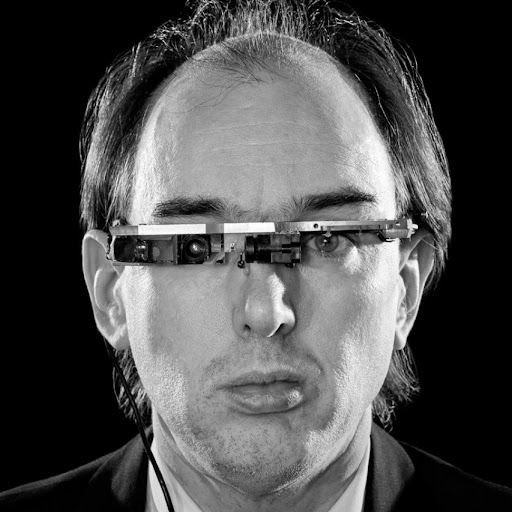

Nós somos seu site de atualizações e conceitos tecnológicos! Aprenda sobre as Tecnlogias
vestíveis. Explicaremos abaixo mais detalhadamente sobre elas, o que são, utilidades e exemplos.
Tecnologias vestíveis
Tecnologia vestível é qualquer tipo de dispositivo que você pode usar no corpo. Também
chamada de wearables, a tecnologia wearable pode coletar dados em tempo real por vários motivos.
São tecnologias que se apresentam na forma de dispositivos iguais ou similares a peças de roupa
ou equipamentos vestíveis, tais como
relógios, pulseiras ou até mesmo óculos de realidade virtual. Os wearables oferecem acesso
instantâneo a notificações, mensagens
e informações sem a necessidade de um smartphone na mão, agilizando a comunicação e o
acesso à informação. No ambiente de trabalho, as tecnologias vestíveis
podem otimizar tarefas e até mesmo ajudar no monitoramento da saúde mental dos
funcionários, potencialmente reduzindo o absenteísmo (ausência frequente de
colaboradores). Explicaremos abaixo mais detalhadamente sobre elas.
Como funcionam?
Os wearables funcionam de forma diferente, dependendo do uso pretendido, como saúde,
condicionamento físico ou entretenimento. A maioria dos wearables contém microprocessadores,
baterias e conectividade com a internet para que os dados coletados possam ser sincronizados
com outros dispositivos eletrônicos, como smartphones ou laptops. Os wearables possuem
sensores incorporados que rastreiam movimentos corporais, fornecem identificação biométrica
ou
auxiliam no rastreamento de localização. Por exemplo, rastreadores de atividade ou
smartwatches
— os tipos mais comuns de wearables — vêm com uma pulseira que envolve o pulso do usuário para
monitorar suas atividades físicas ou sinais vitais ao longo do dia. Embora a maioria dos
wearables seja usada no corpo ou presa à roupa, alguns funcionam sem qualquer contato físico com
o usuário. Celulares, etiquetas inteligentes ou computadores ainda podem ser carregados e
rastrear os movimentos do usuário.
Quando surgiram?
Sua forma moderna começou com o desenvolvimento da computação vestível na década de 1960 e o
pioneiro Steve Mann na década de 1970, que é considerado o pai do computador vestível. A
ideia de integrar tecnologia em vestimentas começou a se desenvolver nos anos 1980, com a
criação de relógios digitais que incluíam funcionalidades como calculadoras, por exemplo, em
meios acadêmicos. Entretanto, ganhou notoriedade em 2012, com o anúncio do Google Glass, o
óculos inteligente do Google.

Para que servem?
Os wearables têm funcionalidades que servem para o monitoramento de saúde (frequência
cardíaca,
oxigenação do sangue e temperatura corporal) e de atividades físicas. Assim, eles fornecem
dados
sobre o corpo e a rotina do usuário.
Esses dispositivos também são úteis na área da saúde, permitindo o monitoramento remoto de
pacientes e o gerenciamento de doenças crônicas. Isso facilita a coleta contínua de dados,
permitindo um acompanhamento mais preciso e personalizado. Além da saúde, os vestíveis
ampliam as formas de entretenimento e produtividade. Relógios e óculos inteligentes, por
exemplo, oferecem navegação sem as mãos, controle de notificações e integração com assistentes
virtuais, transformando a interação com a tecnologia.
Exemplos do dia a dia:
Smartwatches (relógios inteligentes):
Dispositivos usados no pulso que oferecem funções como notificações de smartphone, monitoramento
de condicionamento físico, GPS e pagamentos. Exemplos: Apple Watch, Samsung Galaxy Watch;
Smartband (pulseiras fitness):
Equipamentos de pulso focados em atividades físicas, capazes de medir passos, frequência
cardíaca, calorias queimadas e qualidade do sono. Exemplos: Xiaomi Mi Band, Samsung Galaxy Fit;
Smart ring (anéis inteligentes):
Dispositivos discretos usados nos dedos, que podem medir dados de saúde do usuário, como
frequência cardíaca, oxigenação do sangue e monitoramento do sono. Exemplos: Oura Ring, Samsung
Galaxy Ring;
Smartglasses (óculos inteligentes):
Modelos de óculos que usam Realidade Aumentada (RA) para sobrepor informações digitais ao mundo
real, permitindo interações com o ambiente ao redor. Exemplos: Google Glass, Meta Ray Ban;
Roupas inteligentes:
Vestuário com sensores e componentes eletrônicos incorporados, capazes de coletar dados corporais
como frequência cardíaca, respiração e movimentos durante atividades físicas. Exemplos:
camisetas de compressão com biossensores, meias que monitoram a pisada;
Dispositivos médicos vestíveis:
Equipamentos projetados para monitorar a saúde e detectar condições específicas, registrando
dados importantes para diagnóstico e acompanhamento. Exemplos: monitores de glicose contínuos,
dispositivos portáteis de eletrocardiograma (ECG);
Óculos de realidade virtual (VR):
Headsets que proporcionam imersão total em ambientes digitais, substituindo completamente a visão
do mundo real por telas de alta resolução. Exemplos: Meta Quest, HTC Vive.